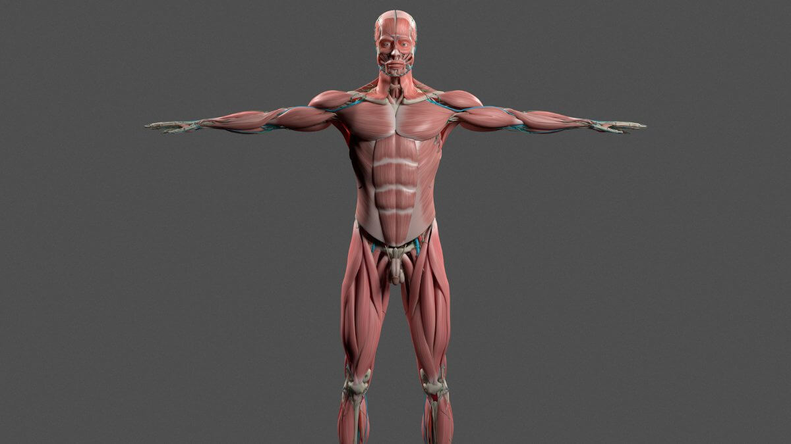

O ser humano é uma criatura fascinante, com diversas características únicas e curiosas. Aqui estão algumas dessas peculiaridades:
Uma pessoa tem em média tem 67 espécies diferentes de bactérias em seu umbigo. Você perde cerca de 4kg de células da pele todos os anos! Os bebês não soltam lágrimas ao chorar até que tenham pelo menos um mês de idade. O cérebro humano triplica de tamanho no primeiro ano de vida do bebê.
Curiosidades:
- O corpo é dividido em 10 sistemas.
- Um bebê tem mais ossos que um adulto.
- Os vasos sanguíneos poderiam dar duas voltas na Terra.
- O cérebro possui 1 milhão de gigabytes de armazenamento.
- O corpo possui quase 5 litros de sangue.
- O ser humano respira por uma narina de cada vez.
Voltar para o início
